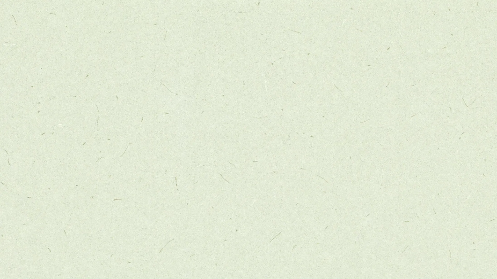
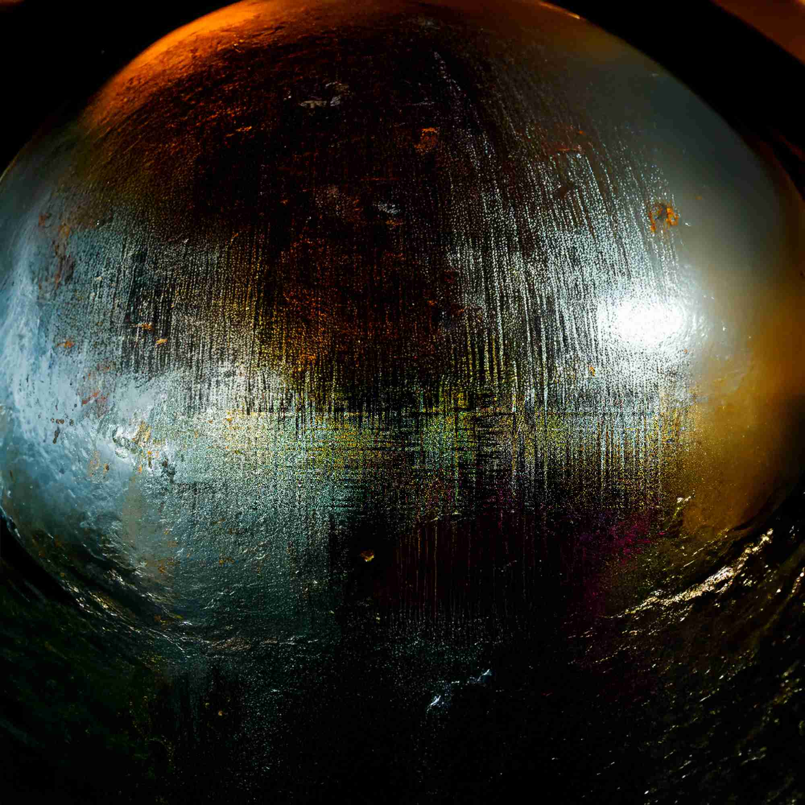
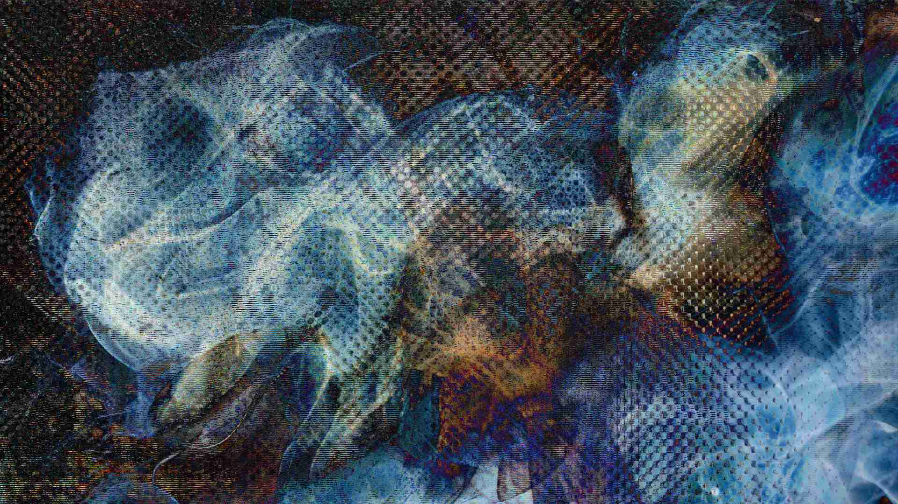

Concept
世界観
Exhibition statement
～ ゆらぎの間で ～
人は、日々たくさんのことを考え、 いろいろなことを感じながら過ごしています。 気づかないうちに、 脳やこころが疲れていることもあると思います。 そんな脳やこころを少し休ませて、 ほんの少しでも安らげる時間をつくりたい。 そんな思いをきっかけに、 この展示を企画しました。 僕は、少し立ち止まる時間があることで、 こころや思考に余白が生まれると思っています。 その余白があるからこそ、 自分の感情や変化に気づいたり、 身近にある小さな幸せを感じたりできる。 こころも、 思考も、 感情も、 ずっと同じではなく、 日々少しずつ揺れ動いています。 その揺らぎを感じ取るためには、 自分の内側に目を向けられる 少しの「ゆとり」が必要です。 そんな考えから、 この展示を「ゆらゆら」と名付けました。 この場所にいる時間だけでも、 普段は気づかず通り過ぎている 自分のこころの動きに、 少しだけ目を向けてみる。 そんな時間になればと思っています。
A moment to feel
感じるということ
作品の前でふと立ち止まり、
呼吸が少し変わる。
目に見えるものだけでなく、
その場に生まれる気配や、
自分の内側に起こる小さな変化にも
耳を澄ませる。
ゆらゆらは、そんな余白を
作品と空間のあいだにひらきます。


Works
作品にふれる
ひとつひとつの表現、
その奥にある感覚を、
Galleryでご覧ください。